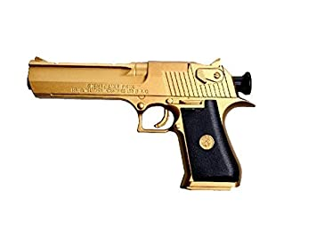

Desert Eagle

Features
The AK-47, officially known as the Avtomat Kalashnikova (Russian: Автомат Калашникова, lit. 'Kalashnikov's automatic [rifle]'; also known as the Kalashnikov or just AK), is a gas-operated assault rifle that is chambered for the 7.62×39mm cartridge. Developed in the Soviet Union by Russian small-arms designer Mikhail Kalashnikov, it is the originating firearm of the Kalashnikov (or "AK") family of rifles. After more than seven decades since its creation, the AK-47 model and its variants remain one of the most popular and widely used firearms in the world.
The number "47" refers to the year the rifle was finished[citation needed]. Design work on the AK-47 began in 1945. It was presented for official military trials in 1947, and, in 1948, the fixed-stock version was introduced into active service for selected units of the Soviet Army. In early 1949, the AK was officially accepted by the Soviet Armed Forces[9] and used by the majority of the member states of the Warsaw Pact.
Price:INR 45,500/-